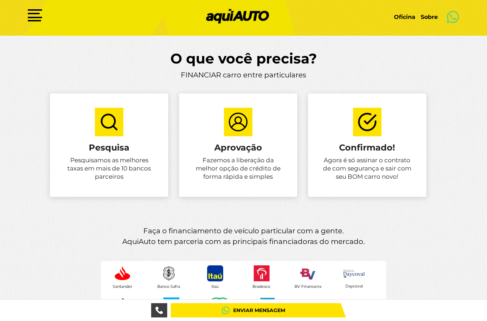
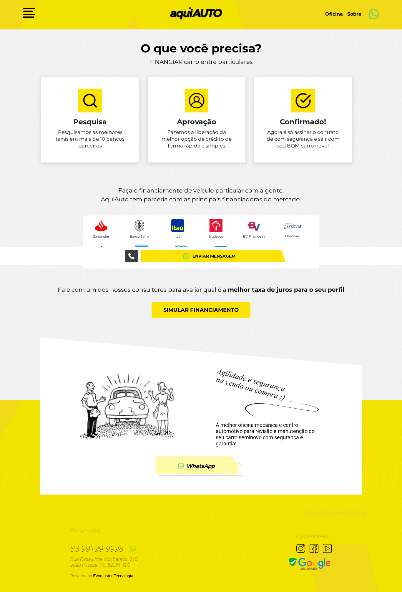

Sistema de Investigação de Marca e Identidade Online
https://aquiauto.com/financie
Prioridade: HIGH · Cenário: C_POSSIBLE_OFFICIAL_CHANNEL · Revisão humana: PENDING
O estabelecimento comercial AquiAuto intermedia financiamento veicular em formato multimarcas/multibancos. Embora a identidade própria da loja predomine e a menção ao Banco BV/BV Financeira seja secundária em uma lista de parceiros, foi identificado o uso do logotipo antigo descontinuado (B vermelho + V azul) e a ausência da declaração regulatória obrigatória de correspondente bancário e CNPJ, enquadrando a situação em comunicação ambígua com necessidade de revisão. [Revisor: DOWNGRADE] A página pertence a uma revendedora/intermediadora de veículos (AquiAuto) e apresenta a marca BV Financeira apenas como uma entre várias instituições parceiras em grade multimarcas. Não há usurpação de identidade institucional nem overbranding que justifique STRONG_INDICATION. Contudo, devido à ausência de CNPJ, omissão de advertências regulatórias de correspondente bancário e uso de logotipo legado, aplica-se DOWNGRADE para REVIEW_REQUIRED com prioridade MEDIUM.
Regiões dos screenshots comparadas com a referência da logo descontinuada (B vermelho sobre V azul), sem uso de IA.
| Screenshot | Posição (x, y) | Tamanho | Similaridade | Imagem |
|---|---|---|---|---|
| E-SHOT-VIEWPORT | 842, 753 | 42×31 px | 0.87 | https://aquiauto.com/img/icon-bv.png |


| Ref | Tipo | Local | Conteúdo |
|---|---|---|---|
| E-VIS-LEGACY-001 | visual | viewport (acima da dobra) | Comparação de imagem (determinística, sem IA): logotipo ANTIGO de Banco BV (B vermelho sobre V azul) em E-SHOT-VIEWPORT, posição x=842 y=753, 42x31px, similaridade 0.87; imagem: https://aquiauto.com/img/icon-bv.png |
| E-URL | domain | url | URL final: https://aquiauto.com/financie (domínio: aquiauto.com) |
| E-SHOT-VIEWPORT | screenshot | viewport | evidence/C9d4c55129f/attempt-1/viewport.png (sha256 f42e8fcec3d5b92e…) |
| E-SHOT-FULL | screenshot | page | evidence/C9d4c55129f/attempt-1/fullpage.png (sha256 7b92e312e95ee501…) |
| E-TITLE | title | head | Financie seu carro com as melhores taxas de juros do mercado - AquiAuto |
| E-META-1 | meta | head | description: Na AquiAuto você compra seu carro seminovo e recebe no conforto e segurança do seu lar! Se precisar de um financiamento com as melhores taxas, também preparamos tudo sem você sair de casa! |
| E-META-2 | meta | head | og:site_name: AquiAuto |
| E-META-3 | meta | head | og:title: AquiAuto | O seu BOM carro novo está aqui! |
| E-META-4 | meta | head | og:description: AquiAuto | o seu BOM carro novo está aqui! |
| E-META-5 | meta | head | author: Evomaster Tecnologia | Mestres em Evolução! |
| E-HEAD-1 | heading | page | O que você precisa? |
| E-HEAD-2 | heading | page | FINANCIAR carro entre particulares |
| E-HEAD-3 | heading | page | Atendimento |
| E-HEAD-4 | heading | page | Siga a AquiAuto |
| E-HDR | text | header | Oficina Sobre |
| E-FOLD | text | viewport (acima da dobra) | Oficina Sobre O que você precisa? FINANCIAR carro entre particulares Pesquisa Pesquisamos as melhores taxas em mais de 10 bancos parceiros Aprovação Fazemos a liberação da melhor opção de crédito de forma rápida e simples Confirmado! Agora é só assinar o contrato de com segurança e sair com seu BOM carro novo! Faça o financiamento de veículo particular com a gente. AquiAuto tem parceria com as principais financiadoras do mercado. Santander Banco Safra Itaú Bradesco BV Financeira Daycoval Santana Banco Pan Creditas Porto Seguro Omni Financeira Banco Alfa Enviar mensagem |
| E-FTR | text | footer | Atendimento 83 99199-9998 Rua Rosa Lima dos Santos, 318 João Pessoa, PB, 58051-590 Powered by Evomaster Tecnologia Siga a AquiAuto |
| E-NAV | nav | header | <https://aquiauto.com/> | Oficina <https://aquiauto.com/oficina-mecanica> | Sobre <https://aquiauto.com/sobre> | <https://api.whatsapp.com/send?phone=5583991999998> |
| E-CTA-1 | cta | page | Oficina Mecânica <https://aquiauto.com/oficina-mecanica> |
| E-CTA-2 | cta | page | Sobre <https://aquiauto.com/sobre> |
| E-CTA-3 | cta | page | SIMULAR FINANCIAMENTO <https://api.whatsapp.com/send?phone=5583991999998&text=Gostaria%20de%20mais%20informa%C3%A7%C3%B5es%20sobre%20o%20financiamento> |
| E-CTA-4 | cta | page | WhatsApp <https://web.whatsapp.com/send?phone=5583991999998&text=Ol%C3%A1%21%20Gostaria%20de%20receber%20atendimento> |
| E-CTA-5 | cta | page | ENVIAR MENSAGEM <https://api.whatsapp.com/send?phone=5583991999998&text=Ol%C3%A1%21%20Gostaria%20de%20receber%20atendimento> |
| E-CONTACT-1 | contact | page | Whatsapp (83) 99199-9998 <https://api.whatsapp.com/send?phone=5583991999998> |
| E-CONTACT-2 | contact | header | <https://api.whatsapp.com/send?phone=5583991999998> |
| E-CONTACT-3 | contact | page | SIMULAR FINANCIAMENTO <https://api.whatsapp.com/send?phone=5583991999998&text=Gostaria%20de%20mais%20informa%C3%A7%C3%B5es%20sobre%20o%20financiamento> |
| E-CONTACT-4 | contact | page | WhatsApp <https://web.whatsapp.com/send?phone=5583991999998&text=Ol%C3%A1%21%20Gostaria%20de%20receber%20atendimento> |
| E-CONTACT-5 | contact | footer | 83 99199-9998 <https://api.whatsapp.com/send?phone=5583991999998&text=Ol%C3%A1%21%20Gostaria%20de%20receber%20atendimento> |
| E-CONTACT-6 | contact | footer | <https://instagram.com/aquiautoveiculos> |
| E-CONTACT-7 | contact | footer | <https://facebook.com/aquiautoveiculos> |
| E-CONTACT-8 | contact | page | <tel:+5583991999998> |
| E-CONTACT-9 | contact | page | ENVIAR MENSAGEM <https://api.whatsapp.com/send?phone=5583991999998&text=Ol%C3%A1%21%20Gostaria%20de%20receber%20atendimento> |
| E-IMG-1 | image | header (acima da dobra) | imagem alt='' src=https://aquiauto.com/img/logo-main.png (177x41, acima da dobra) |
| E-TXT-001 | text | page | |
| E-TXT-002 | text | page | atendimento@aquiauto.com |
| E-TXT-003 | text | page | Pesquisamos as melhores taxas em mais de 10 bancos parceiros |
| E-TXT-004 | text | page | Banco Safra |
| E-TXT-005 | text | page | BV Financeira |
| E-TXT-006 | text | page | Banco Pan |
| E-TXT-007 | text | page | Banco Alfa |
| E-TXT-008 | text | page | |
| E-TXT-009 | text | page | Atendimento |
| Dimensão | Sinal | Achado | Refs |
|---|---|---|---|
| VISUAL_IDENTITY | NEUTRAL | A identidade visual própria da AquiAuto (amarelo, branco e preto) predomina na estrutura da página, sem mimetização da identidade institucional do banco. | E-SHOT-VIEWPORT E-SHOT-FULL E-IMG-1 |
| DECLARED_COMMERCIAL_IDENTITY | CONFUSION | O estabelecimento divulga nome fantasia e endereço físico em João Pessoa/PB, porém omite a razão social e o CNPJ. | E-FTR E-META-2 |
| CORRESPONDENT_TRANSPARENCY | CONFUSION | Não há declaração explícita de correspondente bancário nem menção aos canais de ouvidoria das instituições financeiras parceiras. | E-FOLD E-FTR E-TXT-003 |
| INSTITUTIONAL_LANGUAGE | NEUTRAL | Comunicação em terceira pessoa indicando parceria com mais de 10 bancos para financiamento de veículos entre particulares. | E-FOLD E-TXT-003 |
| LOGO_USAGE | CONFUSION | Exibição do logotipo antigo descontinuado (B vermelho e V azul com a legenda BV Financeira) na grade de parceiros. | E-VIS-LEGACY-001 E-SHOT-VIEWPORT E-TXT-005 |
| SERVICE_JOURNEY | NEUTRAL | A jornada direciona o usuário para atendimento e simulação de financiamento via WhatsApp com a equipe da AquiAuto. | E-CTA-3 E-CTA-4 E-CONTACT-1 |
| CONTACT_CHANNELS | NEUTRAL | Canais de contato próprios da AquiAuto (WhatsApp DDD 83, e-mail de domínio próprio e redes sociais). | E-CONTACT-1 E-CONTACT-5 E-CONTACT-6 E-TXT-002 |
| CONSUMER_CONFUSION | CONFUSION | O uso de logotipo legado somado à falta de esclarecimento sobre o papel regulatório da intermediadora pode suscitar dúvidas quanto à natureza do vínculo com a instituição financeira. | E-VIS-LEGACY-001 E-FOLD |
O estabelecimento comercial AquiAuto intermedia financiamento veicular em formato multimarcas/multibancos. Embora a identidade própria da loja predomine e a menção ao Banco BV/BV Financeira seja secundária em uma lista de parceiros, foi identificado o uso do logotipo antigo descontinuado (B vermelho + V azul) e a ausência da declaração regulatória obrigatória de correspondente bancário e CNPJ, enquadrando a situação em comunicação ambígua com necessidade de revisão.
Nenhum CNPJ ou razão social identificáveis no conteúdo coletado.
| Tipo | Valor | Ref | Contexto |
|---|---|---|---|
| domain | aquiauto.com | E-URL | |
| social_profile | https://instagram.com/aquiautoveiculos | E-CONTACT-6 | |
| social_profile | https://facebook.com/aquiautoveiculos | E-CONTACT-7 | |
| atendimento@aquiauto.com | E-TXT-002 | ||
| trade_name | AquiAuto | E-META-2 | |
| phone | 83 99199-9998 | E-FTR | |
| phone | (83) 99199-9998 | E-CONTACT-1 | |
| Whatsapp (83) 99199-9998 <https://api.whatsapp.com/send?phone=5583991999998> | E-CONTACT-1 | ||
| <https://api.whatsapp.com/send?phone=5583991999998> | E-CONTACT-2 | ||
| SIMULAR FINANCIAMENTO <https://api.whatsapp.com/send?phone=5583991999998&text=Gostaria%20de%20mais%20informa%C3%A7%C3%B5es%20sobre%20o%20financiamento> | E-CONTACT-3 | ||
| WhatsApp <https://web.whatsapp.com/send?phone=5583991999998&text=Ol%C3%A1%21%20Gostaria%20de%20receber%20atendimento> | E-CONTACT-4 | ||
| 83 99199-9998 <https://api.whatsapp.com/send?phone=5583991999998&text=Ol%C3%A1%21%20Gostaria%20de%20receber%20atendimento> | E-CONTACT-5 |
Mapeamento indicativo para apoio à auditoria. Não constitui conclusão regulatória; a decisão definitiva pertence à auditoria.
Fonte: NORMATIVE
Art. 14. O contrato de correspondente deve estabelecer: [...] II - vedação à utilização, pelo contratado, de logomarca ou de outros atributos que sejam similares aos adotados pela instituição contratante em suas agências, postos de atendimento, sítio eletrônico na internet, aplicativo ou outras plataformas de comunicação em rede;
Hipótese: Uso de logomarca, uso excessivo/desproporcional ou de atributos similares aos adotados pela contratante em seus canais. A norma disciplina correspondentes contratados; o responsável não foi identificado como correspondente.
Evidência observada: E-SHOT-FULL E-SHOT-VIEWPORT E-TXT-005 E-VIS-LEGACY-001
Informação faltante:
Fonte: NORMATIVE
Art. 14. O contrato de correspondente deve estabelecer: [...] III - divulgação ao público, pelo contratado, de sua condição de prestador de serviços à instituição contratante, identificada pelo nome com que é conhecida no mercado, com descrição dos produtos e serviços oferecidos e canais de contato da instituição contratante, inclusive de sua ouvidoria, em local visível, em destaque e em formato legível, por meio de: a) sítio eletrônico do correspondente na internet, acessível na página inicial; b) aplicativo e outras plataformas de comunicação em rede do correspondente; [...]
Hipótese: Divulgação ao público da condição de prestador de serviços/parceria ausente, insuficiente, ambígua ou sem destaque. A norma disciplina correspondentes contratados; o responsável não foi identificado como correspondente.
Evidência observada: E-FOLD E-FTR E-META-2 E-SHOT-FULL E-TXT-003 E-VIS-LEGACY-001
Informação faltante:
Fonte: NORMATIVE
Art. 3º O correspondente atua por conta e sob as diretrizes da instituição contratante, que assume inteira responsabilidade pelo atendimento prestado aos clientes e usuários por meio do contratado.
Evidência observada: —
Se o responsável não for correspondente contratado, os indícios podem caracterizar uso indevido de marca ou fraude, fora do escopo da Res. 4.935: avaliar encaminhamento às áreas jurídica/segurança.
Limitações: requisitos contratuais/internos não fornecidos: mapeamento limitado ao texto normativo
Decisão: DOWNGRADE → REVIEW_REQUIRED / MEDIUM
A página pertence a uma revendedora/intermediadora de veículos (AquiAuto) e apresenta a marca BV Financeira apenas como uma entre várias instituições parceiras em grade multimarcas. Não há usurpação de identidade institucional nem overbranding que justifique STRONG_INDICATION. Contudo, devido à ausência de CNPJ, omissão de advertências regulatórias de correspondente bancário e uso de logotipo legado, aplica-se DOWNGRADE para REVIEW_REQUIRED com prioridade MEDIUM.
| Tema | Severidade | Questionamento | Refs |
|---|---|---|---|
| PROPORTIONALITY_AND_MULTIBRAND_CONTEXT | HIGH | A marca BV Financeira não domina a comunicação e não há overbranding. O logotipo antigo aparece em dimensões reduzidas (42x31px) inserido em um carrossel/grid com diversas outras instituições financeiras (Santander, Safra, Itaú, Bradesco, Daycoval, Pan, etc.) sob o título explícito de bancos parceiros. A classificação STRONG_INDICATION é excessiva para esse contexto. | E-VIS-LEGACY-001 E-SHOT-VIEWPORT E-FOLD E-TXT-003 |
| REGULATORY_COMPLIANCE_AS_COBAN | MEDIUM | Trata-se de uma revenda/plataforma de intermediação de veículos (AquiAuto) oferecendo financiamento veicular sem apresentar CNPJ, identificação formal de correspondente bancário ou ouvidoria dos parceiros (Res. CMN nº 4.935/2021), além de utilizar logotipo antigo. Esses fatores justificam a manutenção em REVIEW_REQUIRED, e não o arquivamento. | E-FTR E-VIS-LEGACY-001 E-SHOT-FULL |
| domain_attribution | MEDIUM | Responsável pela página não identificado; a conclusão sobre a marca não pode ser atribuída a um estabelecimento específico. | E-URL |
| multi_bank_intermediation | HIGH | A página menciona múltiplas instituições financeiras concorrentes (Santander, Banco Safra, Itaú, Bradesco) sem domínio próprio da marca nem alegação de canal oficial; provável intermediação multimarcas. | E-URL |
| Fonte | Consulta / hipótese | URL original | Título / trecho |
|---|---|---|---|
| import:text | https://aquiauto.com/financie |
Original: https://aquiauto.com/financie
Final: https://aquiauto.com/financie
| Artefato | Caminho | SHA-256 | Bytes |
|---|---|---|---|
| screenshot_viewport | evidence/C9d4c55129f/attempt-1/viewport.png | f42e8fcec3d5b92edfc6da70d46e743095138c86fa8f626206834866a9d29aa2 | 168065 |
| screenshot_full | evidence/C9d4c55129f/attempt-1/fullpage.png | 7b92e312e95ee50157b44c9175cec25cdcd98267c3fe51e43b6d6ec820babda0 | 530247 |
| html | evidence/C9d4c55129f/attempt-1/page.html.txt | c5959703f310c87130a6c41e9776eb521c602c2691b87339c6833162ed6aaf87 | 41507 |
| text | evidence/C9d4c55129f/attempt-1/text.txt | ab25463b4aa483588ef60b2ee864ad1be4ecf90a8eea5bdf16eeb64b187ee2e8 | 1091 |
| page_data | evidence/C9d4c55129f/attempt-1/page.json | b489a343e50275bfeb7a91464dc0ad93cf298398d89f702762416ee6b2fcb3b4 | 13715 |
| Quando | De | Para | Nota |
|---|---|---|---|
| 2026-11-25T20:05:49+00:00 | DISCOVERED | QUEUED | prioritised (score 5.0) |
| 2026-11-25T20:05:50+00:00 | QUEUED | COLLECTING | |
| 2026-11-25T20:05:58+00:00 | COLLECTING | COLLECTED | |
| 2026-11-25T20:05:58+00:00 | COLLECTED | ANALYZING | |
| 2026-11-25T20:06:19+00:00 | ANALYZING | REVIEWING | |
| 2026-11-25T20:07:05+00:00 | REVIEWING | COMPLETED |